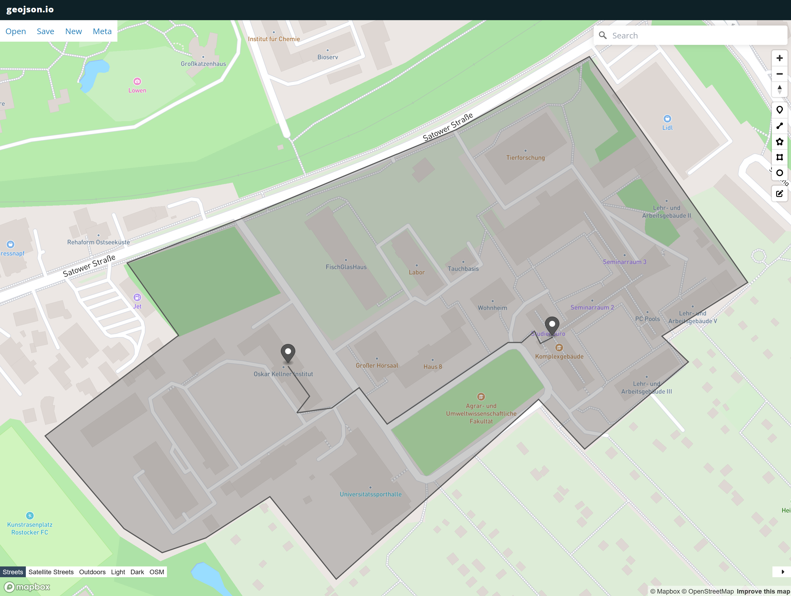

Umgang mit Dateien#
In Programmen müssen regelmäßig Daten geladen und gespeichert werden. Dies geschieht in Computern in Dateien, welche in Verzeichnissen organisiert sind. In der letztem Abschnitt zu Paketen haben wir bereits einige Beispiele gesehen die mit Dateien arbeiten. Diese wollen wir nun detaillierter kennen lernen.
Dateien lesen#
Eine typische Aufgabe ist es Dateien zu laden. Hierfür bietet Python die open()-Funktion mit dem Kürzel r (read). Hierfür gibt man der open()-Funktion den Pfad der zu ladenden Datei an und auch den Datentyp der Datei also ob die Datei eine Textdatei ist t oder eine binäre Datei b ist.
Die open()-Funktion verwendet man meist im with-Konstrukt, welcher die Datei einer Variable zuordnet (fi) und die Datei nach Beendigung des Blocks auch automatisch schließt. Zum lesen des Inhalts der Datei nutzen wir die read() des Dateiobjektes.
with open("geometry/shapes/Line.py", "tr") as fi:
dateinhalt=fi.read()
print(f"Datentyp Datei {type(fi)}")
print(f"Datentyp Variable {type(dateinhalt)}\n")
print(dateinhalt)
Datentyp Datei <class '_io.TextIOWrapper'>
Datentyp Variable <class 'str'>
from geometry.points.ImmutablePoint import ImmutablePoint
class Line:
def __init__(self, start: ImmutablePoint, end: ImmutablePoint):
if not isinstance(start, ImmutablePoint):
raise TypeError("start not of type ImmutablePoint")
if not isinstance(end, ImmutablePoint):
raise TypeError("end not of type ImmutablePoint")
self.start = start
self.end = end
def length(self):
return self.start.distance(self.end)
In gleicher Form kann man auch binäre Dateien einlesen. Dafür tauschen wir den Dateityp t mit binär aus b und laden die Datei. Wir sehen, dass jetzt der Datentyp der geladenen Dateinhalts zu byte wechselt. Printen wir den Dateinhalt sehen wir auch direkt die Sonderzeichen in der Datei wie \r und \n welche für den Zeilenumbruch stehen.
with open("geometry/shapes/Line.py", "br") as fi:
dateinhalt=fi.read()
print(f"Datentyp Datei {type(fi)}")
print(f"Datentyp Variable {type(dateinhalt)}\n")
print(dateinhalt)
Datentyp Datei <class '_io.BufferedReader'>
Datentyp Variable <class 'bytes'>
b'from geometry.points.ImmutablePoint import ImmutablePoint\n\nclass Line:\n def __init__(self, start: ImmutablePoint, end: ImmutablePoint):\n if not isinstance(start, ImmutablePoint):\n raise TypeError("start not of type ImmutablePoint")\n if not isinstance(end, ImmutablePoint):\n raise TypeError("end not of type ImmutablePoint")\n self.start = start\n self.end = end\n\n def length(self):\n return self.start.distance(self.end)'
Dateien schreiben#
In gleicher Weise können wir mit der open()-Funktion auch neue Dateien erzeugen. Hierfür nutzen wir das Kürzel w (write). Auch hier werden Textdateien mit t und binäre Dateien mit b unterschieden. Zum Schreiben der Datei nutzen wir die write()-Methode des Dateiobjektes fo.
with open("meineDatei.txt", "tw") as fo:
dateinhalt="Meine eigener Inhalt"
fo.write(dateinhalt)
Zum überprüfen lesen wir die Datei wieder.
with open("meineDatei.txt", "tr") as fi:
print(fi.read())
Meine eigener Inhalt
Wichtig zu wissen ist, dass die Datei vollständig überschrieben wird.
with open("meineDatei.txt", "tw") as fo:
dateinhalt="Neuer Inhalt"
fo.write(dateinhalt)
with open("meineDatei.txt", "tr") as fi:
print(fi.read())
Neuer Inhalt
Datei existenz testen#
Häufig will man testen ob eine Datei bereits existiert und dementsprechend diese laden oder z.B. neu erzeugen. Solche und andere Funktionen bietet die Standardbibliothek os die wir bereits kennen gelernt haben.
import os
if os.path.exists("meineDatei.txt"):
print("Datei existiert")
else:
print("Datei existiert noch nicht")
Datei existiert
Dateien auflisten#
Zum Auflisten aller Dateien in einem Verzeichnis folder können wir die Funktion os.listdir() benutzen. Mit der Funktion os.path.isfile() können wir prüfen ob der Name auf eine Datei oder ein Verzeichnis ist. Ist es eine Datei, so können wir diese mit der open-Funktion öffnen, um z.B. alle Dateien zu laden und die Anzahl der Code-Zeilen zu berechnen. Dafür nutzen wir anstatt der read-Funktion die readlines-Funktion um alle Zeilen einzeln in einer Liste zu erhalten.
import os
folder = "geometry/shapes/"
files = 0
codelines = 0
for count, name in enumerate(os.listdir(folder)):
if os.path.isfile(os.path.join(folder, name)):
with open(os.path.join(folder, name), "tr") as fi:
codelines += len(fi.readlines())
files += 1
print(f"{codelines} Codezeilen in {files} Dateien")
64 Codezeilen in 5 Dateien
Dateien löschen#
Die os-Paket bietet auch Funktionen, um Dateien zu löschen. Selbstverständlich sollte die mit Vorsicht verwendet werdet werden.
os.remove("meineDatei.txt")
Typische textuelle Dateiformate#
TXT-Dateien#
Eine der einfachsten Formate um Texte auf dem Computer zu Speichern sind Text-Dateien. Sie haben meist die Dateiendung .txt. Diese Dateiänderung haben wir bereits oben genutzt.
JSON-Dateien#
Heutzutage werden strukturierte Informationen oft im JSON-Format ausgetauscht. Insbesondere viele APIs von Webserver im Internet nutzen diesen Standard. Er hat den Vorteil, dass die Daten durch den Menschen lesbar bleiben und somit auch vom Webdeveloper interpretiert werden können. Im Kern ähnelt der Standard der Darstellung von dict in Python.
Wir können zum Beispiel den Datensatz zu einer Person in dem folgendem dict speichern.
person={
"firstName": "John",
"lastName": "Smith",
"isAlive": True,
"age": 25,
"address": {
"streetAddress": "21 2nd Street",
"city": "New York",
"state": "NY",
"postalCode": "10021-3100"
},
"children": [],
"spouse": None
}
Mit Hilfe des json-Pakets lässt sich dieser Datensatz jetzt einfach in ein JSON String umwandeln und in eine Datei schreiben.
import json
with open("person.json", "tw") as fo:
json.dump(person, fo, indent=2)
Schauen wir uns einmal die Datei an. Da es eine textuelle Datei ist, können wir sie mit open(name, "tr") laden.
with open("person.json", "tr") as fi:
dateinhalt=fi.read()
print(dateinhalt)
{
"firstName": "John",
"lastName": "Smith",
"isAlive": true,
"age": 25,
"address": {
"streetAddress": "21 2nd Street",
"city": "New York",
"state": "NY",
"postalCode": "10021-3100"
},
"children": [],
"spouse": null
}
Wir sehen, dass die JSON-Representation dem oben definiertem Dictionary person sehr ähnlich ist. Die einzigen unterschiede sind, dass das in Pyton Großgeschriebene True hier klein geschrieben wird und das none aus Python mit null ersetzt wurde. Die Struktur beider Repräsentationen ist jedoch identisch.
Aus dieser Textdatei können wir jetzt unseren Datensatz direkt als dict wieder laden. Zur Darstellung nutzen wir diesmal pretty Print, weil es besser zu lesen ist.
from pprint import pprint
with open("person.json", "tr") as fi:
person_geladen=json.load(fi)
print(f"Datentyp {type(person_geladen)}")
pprint(person_geladen)
Datentyp <class 'dict'>
{'address': {'city': 'New York',
'postalCode': '10021-3100',
'state': 'NY',
'streetAddress': '21 2nd Street'},
'age': 25,
'children': [],
'firstName': 'John',
'isAlive': True,
'lastName': 'Smith',
'spouse': None}
Das geladene dict entspricht unserem ursprünglichem Dictionary person. Es hat sich zwar die Reihenfolge der Einträge geändert, aber dies ist nicht garantiert in J
GeoJSON-Dateien#
Eine besondere Variante des JSON-Formates das insbesondere für die Umweltinformatik relevant ist, ist das standartisierte GeoJSON-Format. Dieses auf JSON-basierende Format definiert wie bestimmte Geometrische Objekte wie Punkt, Linien und Polygone in JSON dargestellt werden sollen. Jedes Element wird dabei als JSON-Objekt (dict in Python) beschrieben und definiert die Attribute type und coordinates.
Ein Punkt ist dabei definiert als Element mit dem Typen Point und zwei Koordinaten.
punkt = {
"type": "Point",
"coordinates": [12.095843457646907, 54.075229197333016]
}
Eine Linie ist gegeben als LineString mit einer Liste an Punkt-Koordinaten, welche meist die Anfangs- und End-Koordinaten sind. Werden im LineString mehr als zwei Koordinaten angegeben haben wir eine Linienkette.
linie_oki_auf = {
"type": "LineString",
"coordinates": [
[ 12.095844241344963, 54.075206445655795 ],
[ 12.09606074723871, 54.075028604743636 ],
[ 12.09593084370266, 54.074930156768204 ],
[ 12.096282665780166, 54.07495873846247 ],
[ 12.096558710795335, 54.07507941651065 ],
[ 12.096840168457192, 54.074863466071434 ],
[ 12.098052601464076, 54.07534617726671 ],
[ 12.098187917647891, 54.07534617726671 ],
[ 12.098317821183883, 54.07541286718799 ],
[ 12.098377360305278, 54.075339825840246 ],
[ 12.098501851194726, 54.0753779343855 ]
]
}
Ein Polygon ist definiert mit dem Typ Polygon wessen Koordinaten geben ist als Liste einer oder meherer Linienketten, welche geschlossen sind, so dass der Endpunkt mit dem Startpunkt übereinstimmt.
campus = {
"type": "Polygon",
"coordinates": [
[
[ 12.093402064538196, 54.07479416035679 ],
[ 12.094194380118807, 54.074246433609375 ],
[ 12.094578770845374, 54.074103747303894 ] ,
[ 12.095018074534778, 54.074191200259065 ],
[ 12.095661340649713, 54.074435147002276 ],
[ 12.096328140890677, 54.073947252082434 ],
[ 12.098359920447564, 54.075010487417984 ],
[ 12.098822758261605, 54.07471591412107 ],
[ 12.099866104521425, 54.07523141601854 ],
[ 12.09959938442529, 54.075383303749476 ],
[ 12.100462302384159, 54.075700885391115 ],
[ 12.098869826513692, 54.0770356222489 ],
[ 12.09752838132394, 54.076602988106 ],
[ 12.095394620552042, 54.076082900668524 ],
[ 12.09422575895411, 54.07581595060367 ],
[ 12.094743509729398, 54.07538790639916 ],
[ 12.093402064538196, 54.07479416035679 ]
]
]
}
Da viele Objekte ja nicht neben der Geometrie auch noch weitere Attribute haben, gibt es das Hilfsobjekt Feature indem es das Attribute properties gibt in dem man eigenen Meta-Daten definieren kann. So können wir uns ein GeoJSON-Objekt definieren, um die Position des OKI zu speichern.
oki = {
"type": "Feature",
"geometry": {
"type": "Point",
"coordinates": [12.095843457646907, 54.075229197333016]
},
"properties": {
"name": "OKI",
"addresse": "Justus-von-Liebig-Weg 2",
"stadt": "Rostock",
"postleitzahl": "18059",
"land": "Deutschland"
}
}
auf = {
"type": "Feature",
"geometry": {
"type": "Point",
"coordinates": [12.098494794410726, 54.075390284810425]
},
"properties": {
"name": "AUF",
"addresse": "Justus-von-Liebig-Weg 6",
"stadt": "Rostock",
"postleitzahl":"18059",
"land": "Deutschland"
}
}
weg_oki_auf = {
"type": "Feature",
"geometry": linie_oki_auf,
"properties": {
"name": "Weg OKI zu AUF",
"stadt": "Rostock",
"postleitzahl":"18059",
"land": "Deutschland"
}
}
campus_auf = {
"type": "Feature",
"geometry": campus,
"properties": {
"name": "Campus",
"stadt": "Rostock",
"postleitzahl":"18059",
"land": "Deutschland"
}
}
Eine Sammlung an Features wird in einer FeatureCollection abgelegt. Sie besitzt neben dem type die Liste features.
features = {
"type": "FeatureCollection",
"features": [
oki,
auf,
weg_oki_auf,
campus_auf
]
}
Zur Verarbeitung dieser GeoJSON-Objekte in Python können wir das Paket geojson nutzen. Wir installieren diese wieder mit pip.
pip install geojson --quiet
Note: you may need to restart the kernel to use updated packages.
Das Paket geojson bietet uns auch Standardklassen für Punkte, Linien und Polygone an, die wir uns zuvor selbst als Klassen definiert hatten. Aufgrund des umfangreichen Angebots and Paketen für Python lassen sich häufig auch Pakete finden, die entsprechende Klassen für die eigenen Problemstellungen bieten, so dass sich immer eine Suche lohnt. Ein Punkt in GeoJSON erzeugen wir mit dem Paket durch
from geojson import Point
geojson_punkt=Point((12.095843457646907, 54.075229197333016))
print(type(geojson_punkt))
print(geojson_punkt)
<class 'geojson.geometry.Point'>
{"coordinates": [12.095843, 54.075229], "type": "Point"}
Neue Instanzen lassen sich auch direkt aus dem JSON erzeugen. Hierfür benutzen wir die loads-Funktion des Pakets. Sie wandelt einen JSON-String in ein Objekt um. Um den JSON-String zu erzeugen, wandeln wir das Dictionary punkt in ein String um mit der Funktion json.dumps().
import geojson
import json
json_str=json.dumps(punkt)
gson_punkt=geojson.loads(json_str)
print(type(gson_punkt))
print(gson_punkt)
<class 'geojson.geometry.Point'>
{"coordinates": [12.095843, 54.075229], "type": "Point"}
So lässt sich auch unser ganze Feature Collection laden.
import geojson
import json
json_str=json.dumps(features)
gson_features=geojson.loads(json_str)
print(type(gson_features))
print(gson_features)
<class 'geojson.feature.FeatureCollection'>
{"features": [{"geometry": {"coordinates": [12.095843, 54.075229], "type": "Point"}, "properties": {"addresse": "Justus-von-Liebig-Weg 2", "land": "Deutschland", "name": "OKI", "postleitzahl": "18059", "stadt": "Rostock"}, "type": "Feature"}, {"geometry": {"coordinates": [12.098495, 54.07539], "type": "Point"}, "properties": {"addresse": "Justus-von-Liebig-Weg 6", "land": "Deutschland", "name": "AUF", "postleitzahl": "18059", "stadt": "Rostock"}, "type": "Feature"}, {"geometry": {"coordinates": [[12.095844, 54.075206], [12.096061, 54.075029], [12.095931, 54.07493], [12.096283, 54.074959], [12.096559, 54.075079], [12.09684, 54.074863], [12.098053, 54.075346], [12.098188, 54.075346], [12.098318, 54.075413], [12.098377, 54.07534], [12.098502, 54.075378]], "type": "LineString"}, "properties": {"land": "Deutschland", "name": "Weg OKI zu AUF", "postleitzahl": "18059", "stadt": "Rostock"}, "type": "Feature"}, {"geometry": {"coordinates": [[[12.093402, 54.074794], [12.094194, 54.074246], [12.094579, 54.074104], [12.095018, 54.074191], [12.095661, 54.074435], [12.096328, 54.073947], [12.09836, 54.07501], [12.098823, 54.074716], [12.099866, 54.075231], [12.099599, 54.075383], [12.100462, 54.075701], [12.09887, 54.077036], [12.097528, 54.076603], [12.095395, 54.076083], [12.094226, 54.075816], [12.094744, 54.075388], [12.093402, 54.074794]]], "type": "Polygon"}, "properties": {"land": "Deutschland", "name": "Campus", "postleitzahl": "18059", "stadt": "Rostock"}, "type": "Feature"}], "type": "FeatureCollection"}
Der Vorteil von GeoJSON-Objekten ist, dass wiederum viele weitere Pakete existieren, um dieses Format zu analysieren. Wollen wir zum Beispile unsere Feature Collection auf einer Karte visualisieren, können wir das Paket geojsonio nutzen.
pip install geojsonio --quiet
Note: you may need to restart the kernel to use updated packages.
import geojsonio
geojsonio.display(json_str)
Show code cell output
'http://geojson.io/#data=data:application/json,%7B%22type%22%3A%20%22FeatureCollection%22%2C%20%22features%22%3A%20%5B%7B%22type%22%3A%20%22Feature%22%2C%20%22geometry%22%3A%20%7B%22type%22%3A%20%22Point%22%2C%20%22coordinates%22%3A%20%5B12.095843457646907%2C%2054.075229197333016%5D%7D%2C%20%22properties%22%3A%20%7B%22name%22%3A%20%22OKI%22%2C%20%22addresse%22%3A%20%22Justus-von-Liebig-Weg%202%22%2C%20%22stadt%22%3A%20%22Rostock%22%2C%20%22postleitzahl%22%3A%20%2218059%22%2C%20%22land%22%3A%20%22Deutschland%22%7D%7D%2C%20%7B%22type%22%3A%20%22Feature%22%2C%20%22geometry%22%3A%20%7B%22type%22%3A%20%22Point%22%2C%20%22coordinates%22%3A%20%5B12.098494794410726%2C%2054.075390284810425%5D%7D%2C%20%22properties%22%3A%20%7B%22name%22%3A%20%22AUF%22%2C%20%22addresse%22%3A%20%22Justus-von-Liebig-Weg%206%22%2C%20%22stadt%22%3A%20%22Rostock%22%2C%20%22postleitzahl%22%3A%20%2218059%22%2C%20%22land%22%3A%20%22Deutschland%22%7D%7D%2C%20%7B%22type%22%3A%20%22Feature%22%2C%20%22geometry%22%3A%20%7B%22type%22%3A%20%22LineString%22%2C%20%22coordinates%22%3A%20%5B%5B12.095844241344963%2C%2054.075206445655795%5D%2C%20%5B12.09606074723871%2C%2054.075028604743636%5D%2C%20%5B12.09593084370266%2C%2054.074930156768204%5D%2C%20%5B12.096282665780166%2C%2054.07495873846247%5D%2C%20%5B12.096558710795335%2C%2054.07507941651065%5D%2C%20%5B12.096840168457192%2C%2054.074863466071434%5D%2C%20%5B12.098052601464076%2C%2054.07534617726671%5D%2C%20%5B12.098187917647891%2C%2054.07534617726671%5D%2C%20%5B12.098317821183883%2C%2054.07541286718799%5D%2C%20%5B12.098377360305278%2C%2054.075339825840246%5D%2C%20%5B12.098501851194726%2C%2054.0753779343855%5D%5D%7D%2C%20%22properties%22%3A%20%7B%22name%22%3A%20%22Weg%20OKI%20zu%20AUF%22%2C%20%22stadt%22%3A%20%22Rostock%22%2C%20%22postleitzahl%22%3A%20%2218059%22%2C%20%22land%22%3A%20%22Deutschland%22%7D%7D%2C%20%7B%22type%22%3A%20%22Feature%22%2C%20%22geometry%22%3A%20%7B%22type%22%3A%20%22Polygon%22%2C%20%22coordinates%22%3A%20%5B%5B%5B12.093402064538196%2C%2054.07479416035679%5D%2C%20%5B12.094194380118807%2C%2054.074246433609375%5D%2C%20%5B12.094578770845374%2C%2054.074103747303894%5D%2C%20%5B12.095018074534778%2C%2054.074191200259065%5D%2C%20%5B12.095661340649713%2C%2054.074435147002276%5D%2C%20%5B12.096328140890677%2C%2054.073947252082434%5D%2C%20%5B12.098359920447564%2C%2054.075010487417984%5D%2C%20%5B12.098822758261605%2C%2054.07471591412107%5D%2C%20%5B12.099866104521425%2C%2054.07523141601854%5D%2C%20%5B12.09959938442529%2C%2054.075383303749476%5D%2C%20%5B12.100462302384159%2C%2054.075700885391115%5D%2C%20%5B12.098869826513692%2C%2054.0770356222489%5D%2C%20%5B12.09752838132394%2C%2054.076602988106%5D%2C%20%5B12.095394620552042%2C%2054.076082900668524%5D%2C%20%5B12.09422575895411%2C%2054.07581595060367%5D%2C%20%5B12.094743509729398%2C%2054.07538790639916%5D%2C%20%5B12.093402064538196%2C%2054.07479416035679%5D%5D%5D%7D%2C%20%22properties%22%3A%20%7B%22name%22%3A%20%22Campus%22%2C%20%22stadt%22%3A%20%22Rostock%22%2C%20%22postleitzahl%22%3A%20%2218059%22%2C%20%22land%22%3A%20%22Deutschland%22%7D%7D%5D%7D'
Wenn wir dem Link folgen kommen wir zu einer Webseite die uns die Polygone, Linie und Punkte anzeigt.

Weitere Anwendungen von GeoJSON werden wir in der Übung kennen lernen.
XML#
XML ist ein anderes sehr weit verbreitetes Dateiformat. Alle Webseiten im Internet nutzen z.B. dieses Format. Es ist älter als JSON und immer noch sehr beliebt, weil es erlaubt Schemata (XLS) zu definieren, gegen diese die Datei validiert werden kann. So kann man z.B. sicher stellen das HTML-Dateien korrekt sind.
Mit Hilfe der externen Pakete dicttoxml und xmltodict können XML-Dateien auch einfach geschrieben und gelesen werden. Wir installieren sie mit pip.
pip install dicttoxml xmltodict --quiet
Note: you may need to restart the kernel to use updated packages.
with open("person.xml", "tr") as fi:
dateinhalt = fi.read()
print(dateinhalt)
<?xml version="1.0" encoding="UTF-8" ?><person><firstName type="str">John</firstName><lastName type="str">Smith</lastName><isAlive type="bool">true</isAlive><age type="int">25</age><address type="dict"><streetAddress type="str">21 2nd Street</streetAddress><city type="str">New York</city><state type="str">NY</state><postalCode type="str">10021-3100</postalCode></address><children type="list"></children><spouse type="null"></spouse></person>
import xmltodict
with open("person.xml", "tr") as fi:
person_geladen = xmltodict.parse(fi.read(), xml_attribs=False)
print(f"Datentyp {type(person_geladen)}")
pprint(person_geladen)
Datentyp <class 'dict'>
{'person': {'address': {'city': 'New York',
'postalCode': '10021-3100',
'state': 'NY',
'streetAddress': '21 2nd Street'},
'age': '25',
'children': None,
'firstName': 'John',
'isAlive': 'true',
'lastName': 'Smith',
'spouse': None}}
Auch hier entspricht das geladene dict unserem ursprünglichem.
CSV-Dateien#
Tabellen und Messwerte werden häufig als CSV-Dateien ausgetauscht. Dies ist ein sehr einfaches Format bei dem in der ersten Zeile der Text-Datei die Spaltennamen stehen und dann in jeder Zeile steht eine Reihe der Tabelle. Alle Werte werden durch Kommata , getrennt. Da das Komma im Deutschen als Dezimaltrennzeichen genutzt wird, wird hier häufig ein ; oder Tabulator \t genutzt.
Zum Verarbeiten von Tabellen nutzt man in Python meist die pandas-Bibliothek. Wollen wir zum Beispiel den Datensatz zweier Personen speichern, so wandeln wir diesen zuerst in eine pandas-Tabelle (DataFrame) um.
leute=[
{"FirstName":"John", "LastName":"Smith", "IsAlive":True, "Age":25},
{"FirstName":"Mary", "LastName":"Sue", "IsAlive":True, "Age":30}
]
import pandas as pd
tabelle=pd.DataFrame(leute)
tabelle
| FirstName | LastName | IsAlive | Age | |
|---|---|---|---|---|
| 0 | John | Smith | True | 25 |
| 1 | Mary | Sue | True | 30 |
Diesen können wir jetzt als CSV-Datei speichern.
tabelle.to_csv("leute.csv", index=False) # index=False sorgt dafür dass die Zeilennummern 0 und 1 weggelassen werden
Wir lesen probeweise die Datei wieder ein. Da sie text-basiert ist können wir open() mit tr nutzen.
with open("leute.csv", "tr") as fi:
dateinhalt = fi.read()
print(dateinhalt)
FirstName,LastName,IsAlive,Age
John,Smith,True,25
Mary,Sue,True,30
Wir können jetzt die CSV-Datei wieder in eine Tabelle laden.
tabelle_gelesen = pd.read_csv("leute.csv")
tabelle_gelesen
| FirstName | LastName | IsAlive | Age | |
|---|---|---|---|---|
| 0 | John | Smith | True | 25 |
| 1 | Mary | Sue | True | 30 |
und zu dem Dictionary zurückverwandeln
tabelle_gelesen.to_dict("records")
[{'FirstName': 'John', 'LastName': 'Smith', 'IsAlive': True, 'Age': 25},
{'FirstName': 'Mary', 'LastName': 'Sue', 'IsAlive': True, 'Age': 30}]
Typische binäre Dateiformate#
XLS-Dateien#
Diese CSV-Dateien können wir auch einfach in andere Programme wie Microsoft Excel einlesen oder von dort aus speichern. Das Hausformat von Excel sind .xlsx Dateien. Diese können wir mit dem Paket openpyxl auch direkt aus pandas heraus schreiben. Wir installieren uns openpyxl mit ´pip`.
pip install openpyxl --quiet
Note: you may need to restart the kernel to use updated packages.
Nach der installation können wir einfach die Tabelle als Excel-Datei exportieren.
tabelle.to_excel("leute.xlsx", index=False) # index=False sorgt dafür dass die Zeilennummer weggelassen wird
Diese Datei ist erstmal eine binäre Datei. Wir können sie also nicht mit open() und tr lesen, sondern müssen die binäre Variante mit br nehmen.
with open("leute.xlsx", "br") as fi:
dateinhalt = fi.read()
print(dateinhalt)
b'PK\x03\x04\x14\x00\x00\x00\x08\x00\xd2\x86\xd1XFZ\xc1\x0c\x82\x00\x00\x00\xb1\x00\x00\x00\x10\x00\x00\x00docProps/app.xmlM\x8eM\x0b\xc20\x10D\xffJ\xe9\xddnU\xf0 1 \xd4\xa3\xe0\xc9{H76\x90dCv\x85\xfc|S\xc1\x8f\xdb<\xde0\x8c\xba\x15\xcaX\xc4#w5\x86\xc4\xa7~\x11\xc9G\x00\xb6\x0bF\xc3C\xd3\xa9\x19G%\x1aiX\x1e@\xcey\x8b\x13\xd9g\xc4$\xb0\x1b\xc7\x03`\x15L3\xce\x9b\xfc\x1d\xec\xb5:\xe7\x1c\xbc5\xe2)\xe9\xab\xb7\x85\x98\x9ct\x97j1(\xf8\x97k\xf3\x8e\x85\xd7\xbc\x1f\xb6o\xf9a\x05\xbf\x93\xfa\x05PK\x03\x04\x14\x00\x00\x00\x08\x00\xd2\x86\xd1XK\xfeE\x7f\xeb\x00\x00\x00\xcb\x01\x00\x00\x11\x00\x00\x00docProps/core.xml\xa5\x91\xc1N\xc30\x0c\x86_e\xea\xbdu\xd3\x96"EY.\x9b8\x81\x84\xc4$\x10\xb7(\xf1\xb6hM\x1b%F\xed\xde\x9e\xb6l\x1d\x08n\x1c\xe3\xff\xf3g[\x11\xdas\xdd\x05|\x0e\x9d\xc7@\x16\xe3jpM\x1b\xb9\xf6\xeb\xe4H\xe49@\xd4Gt*f#\xd1\x8e\xe1\xbe\x0bN\xd1\xf8\x0c\x07\xf0J\x9f\xd4\x01\xa1\xc8\xf3\x1a\x1c\x922\x8a\x14L\xc2\xd4/\xc6\xe4\xa24zQ\xfa\x8f\xd0\xcc\x02\xa3\x01\x1bt\xd8R\x04\x961\xb8\xb1\x84\xc1\xc5?\x1b\xe6d!\x87h\x17\xaa\xef\xfb\xac/gn\xdc\x88\xc1\xdb\xd3\xe3\xcb\xbc|j\xdbH\xaa\xd5\x98Ha4\xd7\x01\x15uAN\x17\xf9\xf3\xd0\x08\xf8V\x14\x97\xd9_\x054\xabq\x02\xa7\xb3\xc7urM^\xcb\xcdv\xf7\x90\xc8"/\xaa4\xafSv\xbfc\x15\xbf\xabxY\xbfO\xae\x1f\xfd7\xa1\xeb\x8c\xdd\xdb\x7f\x18\xaf\x02)\xe0\xd7\xbf\xc9OPK\x03\x04\x14\x00\x00\x00\x08\x00\xd2\x86\xd1X\x99\\\x9c#\x10\x06\x00\x00\x9c\'\x00\x00\x13\x00\x00\x00xl/theme/theme1.xml\xedZ[s\xda8\x14~\xef\xaf\xd0xg\xf6m\x0b\xc66\x81\xb6\xb4\x13siv\xdb\xb4\x99\x84\xedN\x1f\x85\x11X\x8dlyd\x91\x84\x7f\xbfG6\x10\xcb\x96\r\xed\x92M\xba\x9b<\x04,\xe9\xfb\xceEG\xe7\xe88y\xf3\xee.b\xe8\x86\x88\x94\xf2x`\xd9/\xdb\xd6\xbb\xb7/\xde\xe0W2$\x11A0\x19\xa7\xaf\xf0\xc0\n\xa5L^\xb5Zi\x00\xc38}\xc9\x13\x12\xc3\xdc\x82\x8b\x08Kx\x14\xcb\xd6\\\xe0[\x1a/#\xd6\xea\xb4\xdb\xddV\x84il\xa1\x18Gd`}^,h@\xd0TQZo_ \xb4\xe5\x1f3\xf8\x15\xcbT\x8de\xa3\x01\x13WA&\xb9\x88\xb4\xf2\xf9l\xc5\xfc\xda\xde>e\xcf\xe9:\x1d2\x81n0\x1bX \x7f\xceo\xa7\xe4NZ\x88\xe1T\xc2\xc4\xc0jg?Vk\xc7\xd1\xd2H\x80\x82\xc9}\x94\x05\xbaI\xf6\xa3\xd3\x15\x082\r;:\x9dX\xcev|\xf6\xc4\xed\x9f\x8c\xca\xdat4m\x1a\xe0\xe3\xf1x8\xb6\xcb\xd2\x8bp\x1c\x04\xe0Q\xbb\x9e\xc2\x9d\xf4l\xbf\xa4A\t\xb4\xa3i\xd0d\xd8\xf6\xda\xae\x91\xa6\xaa\x8dSO\xd3\xf7}\xdf\xeb\x9bh\x9c\n\x8d[O\xd3kw\xdd\xd3\x8e\x89\xc6\xad\xd0x\r\xbe\xf1O\x87\xc3\xae\x89\xc6\xab\xd0t\xebi&\'\xfd\xaek\xa4\xe9\x16hBF\xe3\xebz\x12\x15\xb5\xe5@\xd3 \x00Xpv\xd6\xcc\xd2\x03\x96^)\xfau\x94\x1a\xd9\x1d\xbb\xddA\\\xf0X\xee9\x89\x11\xfe\xc6\xc5\x04\xd6i\xd2\x19\x964Fr\x9d\x90\x05\x0e\x007\xc4\xd1LP|\xafA\xb6\x8a\xe0\xc2\x92\xd2\\\x90\xd6\xcf)\xb5P\x1a\x08\x9a\xc8\x81\xf5G\x82!\xc5\xdc\xaf\xfd\xf5\x97\xbb\xc9\xa43z\x9d}:\xcek\x94\x7fi\xab\x01\xa7\xed\xbb\x9b\xcf\x93\xfcs\xe8\xe4\x9f\xa7\x93\xd7MB\xcep\xbc,\t\xf1\xfb#[a\x87\'n;\x13r:\x1cgB|\xcf\xf6\xf6\x91\xa5%2\xcf\xef\xf9\n\xebN<g\x1fV\x96\xb0]\xcf\xcf\xe4\x9e\x8cr#\xbb\xdd\xf6X}\xf6OGn#\xd7\xa9\xc0\xb3"\xd7\x94F$E\x9f\xc8-\xba\xe4\x118\xb5I\r2\x13?\x08\x9d\x86\x98jP\x1c\x02\xa4\t1\x96\xa1\x86\xf8\xb4\xc6\xac\x11\xe0\x13}\xb7\xbe\x08\xc8\xdf\x8d\x88\xf7\xabo\x9a=W\xa1XI\xda\x84\xf8\x10F\x1a\xe2\x9cs\xe6s\xd1l\xfb\x07\xa5F\xd1\xf6U\xbc\xdc\xa3\x97X\x15\x01\x97\x18\xdf4\xaa5,\xc5\xd6x\x95\xc0\xf1\xad\x9c<\x1d\x13\x12\xcd\x94\x0b\x06A\x86\x97$&\x12\xa99~MH\x13\xfe+\xa5\xda\xfe\x9c\xd3@\xf0\x94/$\xfaJ\x91\x8fi\xb3#\xa7t&\xcd\xe83\x1a\xc1F\xaf\x1bu\x87h\xd2<z\xfe\x05\xf9\x9c5\n\x1c\x91\x1b\x1d\x02g\x1b\xb3F!\x84i\xbb\xf0\x1e\xaf$\x8e\x9a\xad\xc2\x11+B>b\x196\x1ar\xb5\x16\x81\xb6q\xa9\x84`Z\x12\xc6\xd1xN\xd2\xb4\x11\xfcY\xac5\x93>`\xc8\xec\xcd\x91u\xce\xd6\x91\x0e\x11\x92^7B>b\xce\x8b\x90\x11\xbf\x1e\x868J\x9a\xed\xa2qX\x04\xfd\x9e^\xc3I\xc1\xe8\x82\xcbf\xfd\xb8~\x86\xd53l,\x8e\xf7G\xd4\x17J\xe4\x0f&\xa7?\xe924\x07\xa3\x9aY\t\xbd\x84Vj\x9f\xaa\x874>\xa8\x1e2\n\x05\xf1\xb9\x1e>\xe5zx\n7\x96\xc6\xbcP\xae\x82{\x01\xff\xd1\xda7\xc2\xab\xf8\x82\xc09\x7f.}\xcf\xa5\xef\xb9\xf4=\xa1\xd2\xb77#}g\xc1\xd3\x8b[\xdeFn[\xc4\xfb\xae1\xda\xd74.(cWr\xcd\xc8\xc7T\xaf\x93)\xd89\x9f\xc0\xec\xfdh>\x9e\xf1\xed\xfa\xd9$\x84\xaf\x9aY-#\x16\x90K\x81\xb3A$\xb8\xfc\x8b\xca\xf0*\xc4\t\xe8d[%\t\xcbT\xd3e7\x8a\x12\x9eB\x1bn\xe9S\xf5J\x95\xd7\xe5\xaf\xb9(\xb8<[\xe4\xe9\xaf\xa1t>,\xcf\xf9<_\xe7\xb4\xcd\x0b3C\xb7rK\xea\xb6\x94\xbe\xb5&8J\xf4\xb1\xccpN\x1e\xcb\x0c;g<\x92\x1d\xb6w\xa0\x1d5\xfb\xf6]v\xe4#\xa50S\x97C\xb8\x1aB\xbe\x03m\xba\x9d\xdc:8\x9e\x98\x91\xb9\n\xd3R\x90o\xc3\xf9\xe9\xc5x\x1a\xe29\xd9\x04\xb9}\x98Wm\xe7\xd8\xd1\xd1\xfb\xe7\xc1Q\xb0\xa3\xef<\x96\x1d\xc7\x88\xf2\xa2!\xee\xa1\x86\x98\xcf\xc3C\x87y{_\x98g\x95\xc6P4\x14ml\xac$,F\xb7`\xb8\xd7\xf1,\x14\xe0d`-\xa0\x07\x83\xafQ\x02\xf2RU`1[\xc6\x03+\x90\xa2|L\x8cE\xe8p\xe7\x97\\_\xe3\xd1\x92\xe3\xdb\xa6e\xb5n\xaf)w\x19m"R9\xc2i\x98\x13g\xab\xca\xdee\xb1\xc1U\x1d\xcfU[\xf2\xb0\xbej=\xb4\x15N\xcf\xfeY\xad\xc8\x9f\x0c\x11N\x16\x0b\x12Hc\x94\x17\xa6J\xa2\xf3\x19S\xbe\xe7+I\xc4U8\xbfE3\xb6\x12\x97\x18\xbc\xe3\xe6\xc7qNS\xb8\x12v\xb6\x0f\x022\xb9\xbb9\xa9ze1g\xa6\xf2\xdf-\x0c\t,[\x88Y\x12\xe2M]\xed\xd5\xe7\x9b\x9c\xaez"v\xfa\x97w\xc1`\xf2\xfdp\xc9G\x0f\xe5;\xe7_\xf4]C\xae~\xf6\xdd\xe3\xfan\x93;HL\x9cy\xc5\x11\x01tE\x02#\x95\x1c\x06\x16\x172\xe4P\xee\x92\x90\x06\x13\x01\xcd\x94\xc9D\xf0\x02\x82d\xa6\x1c\x80\x98\xfa\x0b\xbd\xf2\x0c\xb9)\x15\xce\xad>9\x7fE,\x83\x86N^\xd2%\x12\x14\x8a\xb0\x0c\x05!\x17r\xe3\xef\xef\x93jw\x8c\xd7\xfa,\x81m\x84T2d\xd5\x17\xcaC\x89\xc1=3rC\xd8T%\xf3\xae\xda&\x0b\x85\xdb\xe2T\xcd\xbb\x1a\xbe&`K\xc3zn\x9d-\'\xff\xdb^\xd4=\xb4\x17=F\xf3\xa3\x99\xe0\x1e\xb3\x87s\x9bz\xb8\xc2E\xac\xffX\xd6\x1e\xf92\xdf9p\xdb:\xde\x03^\xe6\x13,C\xa4~\xc1}\x8a\x8a\x80\x11\xabb\xbe\xba\xafO\xf9%\x9c;\xb4{\xf1\x81 \x9b\xfc\xd6\xdb\xa4\xf6\xdd\xe0\x0c|\xd4\xabZ\xa5d+\x11?K\x07|\x1f\x92\x06c\x8c[\xf44_\x8f\x14b\xad\xa6\xb1\xad\xc6\xda1\x0cy\x80X\xf3\x0c\xa1f8\xdf\x87E\x9a\x1a3\xd5\x8b\xac9\x8d\noA\xd5@\xe5?\xdb\xd4\rh\xf6\r4\x1c\x91\x05^1\x99\xb66\xa3\xe4N\n<\xdc\xfe\xef\r\xb0\xc2\xc4\x8e\xe1\xed\x8b\xbf\x01PK\x03\x04\x14\x00\x00\x00\x08\x00\xd2\x86\xd1X\x04\x92\xf3\x91\xa5\x01\x00\x00\x1a\x04\x00\x00\x18\x00\x00\x00xl/worksheets/sheet1.xml}Tmo\x9b0\x10\xfe+\xc8?\xa0&A\xdd\xa6\n\x90\xd2D\xd5Z\xadU\xd5h\xdbg\'\x1c`\xd5/\xd4\xbe\x84\xed\xdf\xef\xec\xa4\x94U\x90O\xdc\xdbs\xf7<\xf6\x99\xbc\xb7\xee\xd5\xb7\x00\x98\xfc\xd1\xca\xf8\x82\xb5\x88\xdd\r\xe7~\xdf\x82\x16\xfe\xcav`(S[\xa7\x05\x92\xeb\x1a\xee;\x07\xa2\x8a \xad\xf82M\xbfp-\xa4ae\x1ec\xcf\xae\xcc\xed\x01\x954\xf0\xec\x12\x7f\xd0Z\xb8\xbf\xb7\xa0l_\xb0\x05{\x0f\xbc\xc8\xa6\xc5\x18\xe0e\xde\x89\x06\xb6\x80?;\x02\x90\xcb\x87>\x95\xd4`\xbc\xb4&qP\x17l\xb5\xb8\xd9d\x11\x11+~I\xe8\xfd\xc8N\x82\x98\x9d\xb5\xaf\xc1\xb9\xaf\n\x96\x06N\xa0`\x8f\xa1\x85\xa0\xcf\x11\xd6\xa0T\xe8DL\xde\xceM\xd9\xc7\xd0\x80\x1c\xdb\xef\xed\xef\xa2~\xa2\xb7\x13\x1e\xd6V\xfd\x96\x15\xb6\x05\xfb\xc6\x92\njqP\xf8b\xfb\xefp\xd6t\xfdAq#P\x94\xb9\xb3}\xe2\x82\xd82\xdf\x07#N\x8f\xe2\xa9\\\x9apT[t\x94\x954\x0f\xcb;\xe9<>\t\r9G"\x13\x82|\x7f\x86\xde^\x86\xfe\x10\xb3\xc8\xf5e\xe4\xbd_):\x9e\t\xe0\xe62p\xd5|\x02q\x92;h^\x0e\x9a\x973\xf8\x07\xdb\x9a)\xa1s\xf5[-\xb1\x9d\xd2w\x02\xec\xa8\xf0X.r~\x1cK8\xe5L\xcc-\xaf\x87\xe4\x7fT\xb3\x81j63\xfa\x91\x16w\x8a\xea\\\xfd\xf60y\x11\xd9\x05\xa2\xd9\x88h\x96~"\xcaG;\x15\xde\x0c\xf1i\xa4\xf1\x89\x82\x9a@\xe9\xd5W\xda<wZ\xc2\x93\x83\xb6\x8b\x17\xb7\xb3\x88VG\xb3\xa5\xb7\x0b.\x14P\xbe\xb6\x16\x07\'<\x82\xe1wP\xfe\x03PK\x03\x04\x14\x00\x00\x00\x08\x00\xd2\x86\xd1X\xf7\xf6\x8f\t\xa7\x02\x00\x00m\x0b\x00\x00\r\x00\x00\x00xl/styles.xml\xddV\xdb\x8e\x9b0\x10\xfd\x15\xc4\x07\x94MPQ\xa8B\xa46\xd2J\x95\xdaj\xa5\xdd\x87\xbe\x9a`\x82%_\xa81\xabd\xbf\xbe3\xb6\x13\x92\xec\x0e\xdd\xf6\xb1\xa0\x84\xf1\x1c\x9f\xb9;d=\xb8\xa3\xe4\x8f\x1d\xe7.9(\xa9\x87*\xed\x9c\xeb?e\xd9\xb0\xeb\xb8b\xc3\x07\xd3s\rHk\xacb\x0e\x96v\x9f\r\xbd\xe5\xac\x19\x90\xa4d\xb6\xbc\xbb+2\xc5\x84N7k=\xaa{\xe5\x86dgF\xed\xaa\xf4.M\xb2\xcd\xba5zR-\xd3\xa0\x80\xbdL\xf1\xe4\x99\xc9*\xdd2)j+\xc2f\xa6\x84<\x06\xfd\xd2kvF\x1a\x9b8\x88\x86W\xe9\xc2\xab\x86\x97\xb0a\x11\x97\x18j\xb4\xa5\x846\xd6k\xb3\xe0&|\xd7\x91p\x89\xf8\xc7\x00;\x84\x94\xd7\xf1\x81b\xb3\xee\x99s\xdc\xea{X\x04\x92\xd7\xbe\xc6\xa2\xfct\xec!\xbe\xbde\xc7\xc5\xf2cz\xc1\xf0\x0fpS\x1b\xdbp{\xe5(\xa86k\xc9[\x87\x0c+\xf6\x9d\x17\x9c\xe9\xf1Q\x1b\xe7\x8cB\xa9\x11lo4\x0b\x91\x9chWt\xdf\xc8*u\x1d4b\xb2u\xabE\xc3\xb7\xba\xe8\xe5V}v\x13\x05Ha\xc7\xa5|\xc4m?\xdbs\x1e\x0b\xc8\xe3\xd0&\xa1\xf3_\x1b\xdft,\xecI\x84\xe4\xa3\x18\xcc\xc4\x05:\xb84\x17\x8c_\xd8]\xfe\x9b\xdd^<\x1b\xf7e\x84\x8c\xb4_\xff\x1a\x8d\xe3\x0f\x96\xb7\xe2\xe0\xd7\x87v\n\x802\xbf \xcc\x83\x9e\xf5\xbd<~\x96b\xaf\x15\x0f\xd9\xbf\xdb\xe3f\xcdN\xbc\xa43V\xbc\x807\x9c\xc9\x1d(8\x8c\xec3\xb7N\xecP\x03M\n\x05:\xb4\xb1J\xe7\x02\xf9r]\xd5\xfe\xacM\xf0@U\xe9\x0f<\xa8\xf2"\xd1z\x14\xd2\t\x1dW\x9dh\x1a\xae_\xb7\x00\xec;V\xc3O\xc1\x95\x03\xd8\xd5\xf0\x96\x8d\xd2=\x9d\xc1*\x9d\xe4\xef\xbc\x11\xa3*\xcf\xbb\x1e\xb0\x16q\xd7$\x7f\xc3Q\\\x14\xd3i\x06gB7\xfc\xc0\x9bm\\\xda}\xed\xc5\x04\x04p\x1b\xaf0\xc87\xd0\xbd\xbf\x08\x88d\x05\x90\x80\x10$}\x91a\x90\xac\xc0#}\xfd\x8fy\xad\xe8\xbc\x02HF\xb8z\x1bZ\xd1\xac\x15\xcd\n\xbc7\xa1\xad\xbfI_\x04\xab\x84\x8bH\xb9,\xf3\xbc(\xc8\xf2n\xb7o\x87\xb1%kX\x14\xf8!\x0c\x92\x11"\x87\xf4\x85\xde\xfe\xb6\xf23\x03036\x7f\x98\r\xb2\xcb\xb3cC\xa6<3\xa2d\xca3\x95G\x88\xa8!r\xca\x92\x18\x00\xd2\x17r\xc8\xa6\x90\x13\x85A\x10\xbep\xd4\x08V\x9ec\x9f\xc9\x08\xc9c>\x03\x95%\t\xe1\x90\x12\xd3[\x14T\xa1\n\xbc\x89~\x91\x87(\xcf\xcb\x92\x80\x10$\xc2\xc8s\x12\xc2\x03;\x03\x91a` $\x94\xe7\xe1Ez\xf3>\xcbN\xef\xb9l\xfa\x83\xbd\xf9\rPK\x03\x04\x14\x00\x00\x00\x08\x00\xd2\x86\xd1X\xb7G\xeb\x8a\xc0\x00\x00\x00\x16\x02\x00\x00\x0b\x00\x00\x00_rels/.rels\x9d\x92Kn\x021\x0c@\xaf\x12e_L\xa9\xc4\x021\xac\xd8\xb0C\x88\x0b\xb8\x89\xe7\xa3\x99\xc4\x91c\xc4\xf4\xf6\x8d\xd8\xc0 h\x11K\xff\x9e\x9e-\xaf\x0f4\xa0v\x1cs\xdb\xa5l\xc60\xc4\\\xd9V5\xad\x00\xb2k)`\x9eq\xa2X*5K@-\xa14\x90\xd0\xf5\xd8\x10,\xe6\xf3%\xc8-\xc3n\xd6\xb7Ls\xfcI\xf4\n\x91\xeb\xbas\xb4ew\n\x14\xf5\x01\xf8\xae\xc3\x9a#JCZ\xd9q\x803K\xff\xcd\xdc\xcf\n\xd4\x9a\x9d\xaf\xac\xec\xfc\xa75\xf0\xa6\xcc\xf3\xf5 \x90\xa2GEp,\xf4\x91\xa4L\x8bv\x94\xaf>\x9e\xdd\xbe\xa4\xf3\xa5cb\xb4x\xdf\xe8\xff\xf3\xd0\xa8\x14=\xf9\xbf\x9d0\xa5\x89\xd2\xd7E\t&o\xb0\xf9\x05PK\x03\x04\x14\x00\x00\x00\x08\x00\xd2\x86\xd1X\xf6u\x01\xaa0\x01\x00\x00)\x02\x00\x00\x0f\x00\x00\x00xl/workbook.xml\x8d\x90\xd1N\xc30\x0cE\x7f\xa5\xca\x07\xd0n\x82IL\xeb^\x98\x80I\x08\x10C{\xcfZw\xb5\x96\xc4\x95\xe3n\xb0\xaf\'I)L\xe2\x85\'\xc7\xd7\xd6\xc9\xbd^\x9c\x88\x0f;\xa2C\xf6a\x8d\xf3s.U+\xd2\xcd\xf3\xdcW-X\xed\xaf\xa8\x03\x17f\r\xb1\xd5\x12Z\xde\xe7\xd44X\xc1\x8a\xaa\xde\x82\x93|Z\x14\xb3\x9c\xc1hAr\xbe\xc5\xce\xab\x81\xf6\x1f\x96\xef\x18t\xed[\x00\xb1f@Y\x8dN-\x17\xa3\xb3W\xce\xf2\xcb\x8e\x04\xaa\xf8ST\xa3\xb2E8\xf9\xdf\x85\xd8fG\xf4\xb8C\x83\xf2Y\xaa\xf46\xa02\x8b\x0e-\x9e\xa1.U\xa12\xdf\xd2\xe9\x91\x18\xcf\xe4D\x9bM\xc5dL\xa9&\xc3`\x0b,X\xfd\x917\xd1\xe6\xbb\xde\xf9\xa4\x88\xde\xbd\xc5\xcc\xa5\x9a\x15\x01\xd8 {I\x1b\x89\xaf\x83\xc9#\x84\xe5\xa1\xeb\x85\xee\xd1\x08\xf0J\x0b<0\xf5\x1d\xba}\xc2\x84\x18\xf9E\x8et\x8a\xb1fN[(U\xa2&\x0f\xa1\xae\xeb\xc1\x8f\x04\xd0E:\x9ec\x18\xf0\xba\xfeF\x8e\x9c\x1a\x1atP?\x07\x90\x8f\x83\x90\xaa\n\'\x8d%\x91\xa6\xd77\x93\xdb\xe0\xbe7\xe6.h/\xee\x89t\xfdcl\xbc\xea\xf2\x0bPK\x03\x04\x14\x00\x00\x00\x08\x00\xd2\x86\xd1X3\xeb\xe3\xba\xad\x00\x00\x00\xfb\x01\x00\x00\x1a\x00\x00\x00xl/_rels/workbook.xml.rels\xb5\x91=\x0e\x830\x0c\x85\xaf\x12\xe5\x00\x18\xa8\xd4\xa1\x02\xa6.\xac\x15\x17\x88\x82\xf9\x11\x81D\xb1\xab\xc2\xed\x1b\xc1\x00H\x1d\xba0Y\xcf\x96\xbf\xf7dg/4\x8a{;Q\xd7;\x12\xf3h&\xcae\xc7\xec\x1e\x00\xa4;\x1c\x15E\xd6\xe1\x14&\x8d\xf5\xa3\xe2 }\x0bN\xe9A\xb5\x08i\x1c\xdf\xc1\x1f\x19\xb2\xc8\x8eLQ-\x0e\xff!\xda\xa6\xe95>\xad~\x8f8\xf1\x0f0|\xac\x1f\xa8Cd)*\xe5[\xe4\\\xc2l\xf66\xc1Z\x92(\x90\xa5(\xeb\\\xfa\xb2N\xa4\x80\xcb\x12\x11/\x06i\x8f\xb3\xe9\x93\x7fz\xa5?\x87]\xdc\xedW\xb95\xcfG\xb8\xad!\xe0\xf4\xeb\xe2\x0bPK\x03\x04\x14\x00\x00\x00\x08\x00\xd2\x86\xd1X\x9b\x86B\x84\x1b\x01\x00\x00\xd7\x03\x00\x00\x13\x00\x00\x00[Content_Types].xml\xad\x93\xcfN\xc30\x0c\xc6_\xa5\xeauj38p@\xeb.\x8c+\xec\xc0\x0b\x84\xc4]\xa3\xe6\x9fboto\x8f\xdb\xb2J\xa0\xb1\r\x95K\xa3\xc6\xf6\xf7s\xfc%\xab\xb7c\x04\xcc:g=VyC\x14\x1f\x85@\xd5\x80\x93X\x86\x08\x9e#uHN\x12\xff\xa6\x9d\x88R\xb5r\x07\xe2~\xb9|\x10*x\x02O\x05\xf5\x1a\xf9z\xb5\x81Z\xee-e\xcf\x1do\xa3\t\xbe\xca\x13X\xcc\xb3\xa71\xb1gU\xb9\x8c\xd1\x1a%\x89\xe3\xe2\xe0\xf5\x0fJ\xf1E(\xb9r\xc8\xc1\xc6D\\pB\x9e\x89\xb3\x88!\xf4+\xe1T\xf8z\x80\x94\x8c\x86l+\x13\xbdH\xc7i\xa2\xb3\x02\xe9h\x01\xcb\xcb\x1ag\xba\x0cum\x14\xe8\xa0\xf6\x8eKJ\x8c\t\xa4\xc6\x06\x80\x9c-G\xd1\xc5\x154\xf1\x90a\xfc\xde\xcdn`\x90\xb9H\xe4\xd4m\n\x11\xd9\xb5\x04\x7f\xe7\x9dl\xe9\xab\x8b\xc8B\x90\xc8\\9\xe4\x84d\xed\xd9\'\x84\xdeq\r\xfaV8O\xf8#\xa4v\xf0\x04\xc5\xb0\xcc\x1f\xf3w\x9f\'\xfd[\x1ay\x0f\xa1\xfd\xef{\xd6\xaf\xa5\x93\xc6O\r\x88\xe1=\xaf?\x01PK\x01\x02\x14\x03\x14\x00\x00\x00\x08\x00\xd2\x86\xd1XFZ\xc1\x0c\x82\x00\x00\x00\xb1\x00\x00\x00\x10\x00\x00\x00\x00\x00\x00\x00\x00\x00\x00\x00\x80\x01\x00\x00\x00\x00docProps/app.xmlPK\x01\x02\x14\x03\x14\x00\x00\x00\x08\x00\xd2\x86\xd1XK\xfeE\x7f\xeb\x00\x00\x00\xcb\x01\x00\x00\x11\x00\x00\x00\x00\x00\x00\x00\x00\x00\x00\x00\x80\x01\xb0\x00\x00\x00docProps/core.xmlPK\x01\x02\x14\x03\x14\x00\x00\x00\x08\x00\xd2\x86\xd1X\x99\\\x9c#\x10\x06\x00\x00\x9c\'\x00\x00\x13\x00\x00\x00\x00\x00\x00\x00\x00\x00\x00\x00\x80\x01\xca\x01\x00\x00xl/theme/theme1.xmlPK\x01\x02\x14\x03\x14\x00\x00\x00\x08\x00\xd2\x86\xd1X\x04\x92\xf3\x91\xa5\x01\x00\x00\x1a\x04\x00\x00\x18\x00\x00\x00\x00\x00\x00\x00\x00\x00\x00\x00\x80\x81\x0b\x08\x00\x00xl/worksheets/sheet1.xmlPK\x01\x02\x14\x03\x14\x00\x00\x00\x08\x00\xd2\x86\xd1X\xf7\xf6\x8f\t\xa7\x02\x00\x00m\x0b\x00\x00\r\x00\x00\x00\x00\x00\x00\x00\x00\x00\x00\x00\x80\x01\xe6\t\x00\x00xl/styles.xmlPK\x01\x02\x14\x03\x14\x00\x00\x00\x08\x00\xd2\x86\xd1X\xb7G\xeb\x8a\xc0\x00\x00\x00\x16\x02\x00\x00\x0b\x00\x00\x00\x00\x00\x00\x00\x00\x00\x00\x00\x80\x01\xb8\x0c\x00\x00_rels/.relsPK\x01\x02\x14\x03\x14\x00\x00\x00\x08\x00\xd2\x86\xd1X\xf6u\x01\xaa0\x01\x00\x00)\x02\x00\x00\x0f\x00\x00\x00\x00\x00\x00\x00\x00\x00\x00\x00\x80\x01\xa1\r\x00\x00xl/workbook.xmlPK\x01\x02\x14\x03\x14\x00\x00\x00\x08\x00\xd2\x86\xd1X3\xeb\xe3\xba\xad\x00\x00\x00\xfb\x01\x00\x00\x1a\x00\x00\x00\x00\x00\x00\x00\x00\x00\x00\x00\x80\x01\xfe\x0e\x00\x00xl/_rels/workbook.xml.relsPK\x01\x02\x14\x03\x14\x00\x00\x00\x08\x00\xd2\x86\xd1X\x9b\x86B\x84\x1b\x01\x00\x00\xd7\x03\x00\x00\x13\x00\x00\x00\x00\x00\x00\x00\x00\x00\x00\x00\x80\x01\xe3\x0f\x00\x00[Content_Types].xmlPK\x05\x06\x00\x00\x00\x00\t\x00\t\x00>\x02\x00\x00/\x11\x00\x00\x00\x00'
Was wir sehen sind viele unverständliche binäre Zeichen. Dahinter steckt in diesem Fall eine komprimierte ZIP-Datei, da das .xlsx-Dateiformat eigentlich nur eine ZIP-Datei ist die mehrere XML-Dateien enthält.
ZIP-Dateien#
ZIP-Dateien sind Dateien, welche andere Dateien und Verzeichnisse enthalten und diese komprimieren. Dadurch können mehrere Dateien in einer einzigen zusammengefasst werden und verbrauchen weniger Speicher. Deshalb werden ZIP-Dateien gerne im Versand mehrere Dateien verwendet.
Auch die .xlsx Datei von Excel ist eine verkappte ZIP-Datei, die mehrere XML-Dateien in dem offenen Office-Format enthält.
Dies lässt sich zeigen in dem wir die Datei in eine ZIP-Datei umbenennen mit os.rename().
os.rename("leute.xlsx", "leute.zip")
Wollen wir die Dateien in der Zip-Datei sehen, so können wir diese mit dem ZipFile-Objekt des Standardpaktes zipfile öffnen. Es funktioniert genauso wie open() nur für ZIP-Dateien. Mit der Methode namelist können wir alle Dateien in der Zip-Datei auflisten.
import zipfile
with zipfile.ZipFile("leute.zip",'r') as zipdatei:
for fname in zipdatei.namelist():
print(fname)
docProps/app.xml
docProps/core.xml
xl/theme/theme1.xml
xl/worksheets/sheet1.xml
xl/styles.xml
_rels/.rels
xl/workbook.xml
xl/_rels/workbook.xml.rels
[Content_Types].xml
Um aus der Zip-Datei eine einzelne Datei zu lesen, können wir die read()-Methode nutzen. Laden wir z.B. die ‘xl/worksheets/sheet1.xml’ welche unsere Daten enthält so sehen wir unsere Daten in der typischen XML-Struktur.
import zipfile
from pprint import pprint
with zipfile.ZipFile("leute.zip",'r') as zipdatei:
xmldatei = zipdatei.read("xl/worksheets/sheet1.xml")
print(xmldatei)
b'<worksheet xmlns="http://schemas.openxmlformats.org/spreadsheetml/2006/main"><sheetPr><outlinePr summaryBelow="1" summaryRight="1" /><pageSetUpPr /></sheetPr><dimension ref="A1:D3" /><sheetViews><sheetView workbookViewId="0"><selection activeCell="A1" sqref="A1" /></sheetView></sheetViews><sheetFormatPr baseColWidth="8" defaultRowHeight="15" /><sheetData><row r="1"><c r="A1" s="1" t="inlineStr"><is><t>FirstName</t></is></c><c r="B1" s="1" t="inlineStr"><is><t>LastName</t></is></c><c r="C1" s="1" t="inlineStr"><is><t>IsAlive</t></is></c><c r="D1" s="1" t="inlineStr"><is><t>Age</t></is></c></row><row r="2"><c r="A2" t="inlineStr"><is><t>John</t></is></c><c r="B2" t="inlineStr"><is><t>Smith</t></is></c><c r="C2" t="b"><v>1</v></c><c r="D2" t="n"><v>25</v></c></row><row r="3"><c r="A3" t="inlineStr"><is><t>Mary</t></is></c><c r="B3" t="inlineStr"><is><t>Sue</t></is></c><c r="C3" t="b"><v>1</v></c><c r="D3" t="n"><v>30</v></c></row></sheetData><pageMargins left="0.75" right="0.75" top="1" bottom="1" header="0.5" footer="0.5" /></worksheet>'
Mit der parse-Funktion des xmltodict-Paketes können wir diese XML-Datei zum Beispiel in ein ´dict´ in Python umwandeln.
xmldict = xmltodict.parse(xmldatei, xml_attribs=False)
pprint(xmldict)
{'worksheet': {'dimension': None,
'pageMargins': None,
'sheetData': {'row': [{'c': [{'is': {'t': 'FirstName'}},
{'is': {'t': 'LastName'}},
{'is': {'t': 'IsAlive'}},
{'is': {'t': 'Age'}}]},
{'c': [{'is': {'t': 'John'}},
{'is': {'t': 'Smith'}},
{'v': '1'},
{'v': '25'}]},
{'c': [{'is': {'t': 'Mary'}},
{'is': {'t': 'Sue'}},
{'v': '1'},
{'v': '30'}]}]},
'sheetFormatPr': None,
'sheetPr': {'outlinePr': None, 'pageSetUpPr': None},
'sheetViews': {'sheetView': {'selection': None}}}}
Unser ursprüngliches Dictionary leute, welches wir oben definiert haben ist in diesem Dictionary nicht mehr erkenntlich. Das liegt daran, dass dieses Format von Microsoft Excel definiert wurde und nicht speziel für unseren Zweck ausgelegt ist. Wichtig ist allerdings, dass das Format durchaus durch Menschen lesbar ist, so dass heutzutage viele andere Tools, wie LibreOffice, Google Docs, etc. dieses Format lesen und schreiben können. Das ist ein wichtiger Grund für die Nutzung von offenen XML-Formaten.